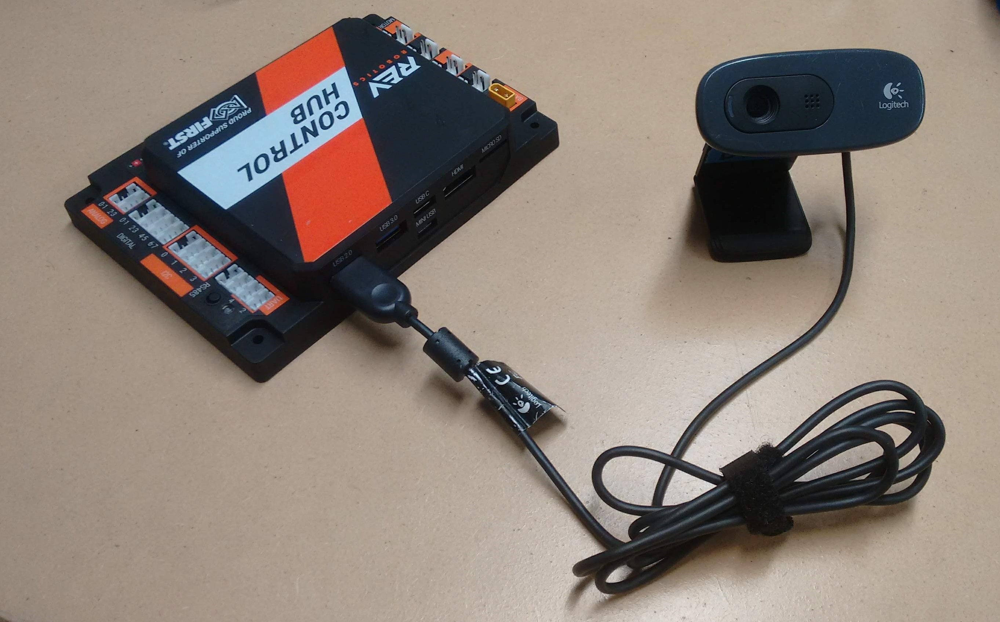
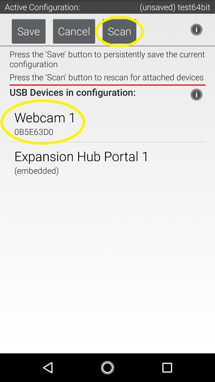
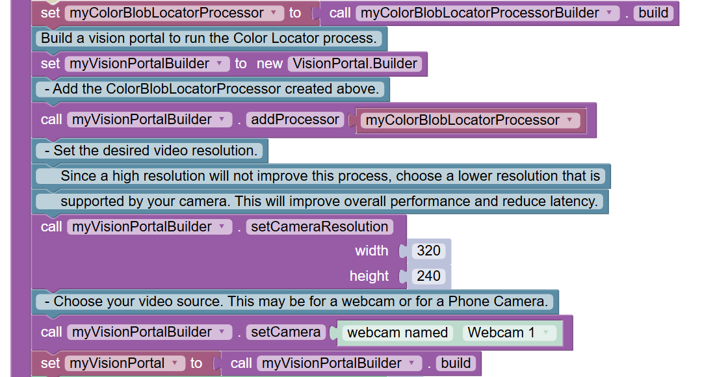
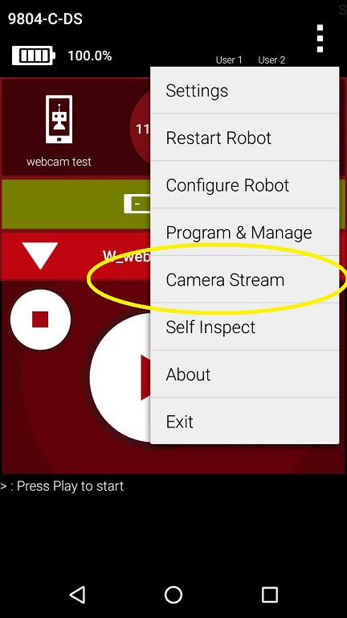
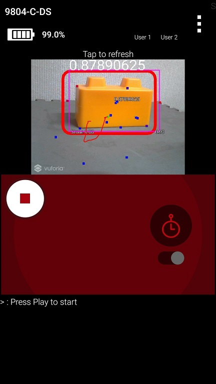
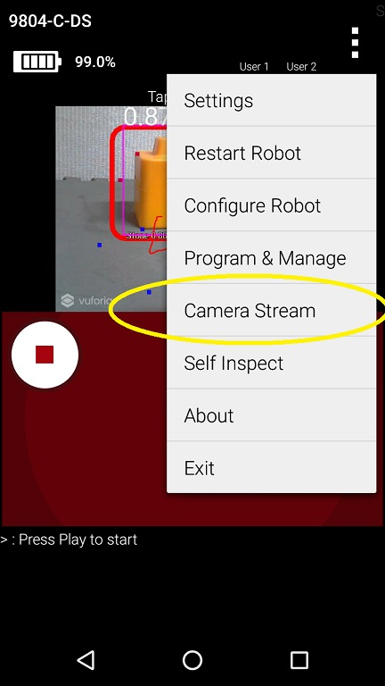
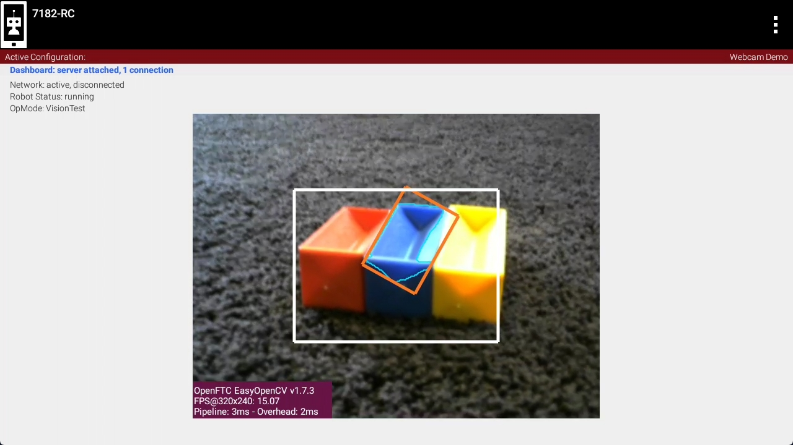
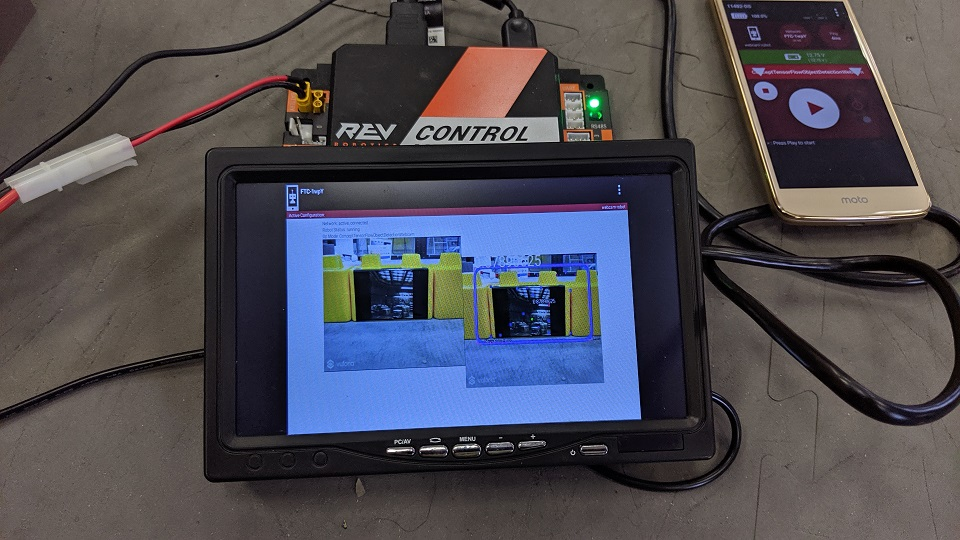

Configuring an External Webcam with a Control Hub
Introduction
The Competition Manual allows the use of USB Video Class (UVC) compatible cameras for computer vision-related tasks. If you are using a REV Robotics Control Hub, then you will need to use an external webcam, since the Control Hub does not include a built-in camera. This document describes how to connect, configure and use an external webcam with a Control Hub.
Special thanks to Chris Johannesen of Westside Robotics (Los Angeles) for putting together this documentation.
Type of External Camera
Theoretically, any USB Video Class (UVC) camera should work with the system. However, FIRST recommends using UVC web cameras from Logitech. The following cameras have been tested and calibrated to work accurately with SDK software:
Calibrating a UVC camera is an optional, advanced task. Instructions for creating a calibration file are in the comments of the teamwebcamcalibrations.xml file in the ftc_app project folder (visit this link for an online copy of the file).
Connecting the Camera
The UVC camera can plug directly into the USB 3.0 port on the REV Control Hub. Unlike the REV Expansion Hub, there is no need for an external powered USB hub.
Warning
An electrostatic discharge (ESD) event on the USB 2.0 port on the Control Hub can cause Wi-Fi disconnects.
The REV Control Hub has a known ESD issue with devices plugged into the USB 2.0 port. Using the USB 2.0 Port may cause ESD to affect your Control Hub’s Wi-Fi Chip (causing Wi-Fi disconnects with the driver hub). Ensure that you plug USB devices, such as a Camera, into the USB 3.0 Port on your Control Hub.
If you wish to connect two webcams see Cameras and USB Hubs.
Camera Configuration
Before using the external camera, it must be added to the active configuration file as a USB-connected device.
Use the Configure Robot menu item on the paired DRIVER STATION device to add the webcam as a USB-connected device to an existing or newly created configuration file. Note that the Scan operation for the Configure Robot activity should detect the webcam and give it a default name of “Webcam 1”.
You can keep this default name (the sample Op Modes reference this name) or change it. If you change the webcam name, make sure your Op Modes refer to this new name.
Sample Op Modes
When the configuration has been saved and activated, the external UVC camera can be programmed for robot vision tasks.
The SDK software offers “webcam” versions of its sample Blocks and Java Op Modes, showing how to use the external UVC camera for VisionPortal operations.
Before opening and editing an Op Mode, verify that the intended configuration (with camera) is active. Also verify that the name referenced in the Op Mode matches the name specified in the configuration file.
Image Preview
The FIRST Tech Challenge apps provide camera preview for ‘stream-enabled’ Op Modes using VisionPortal.
On a paired DRIVER STATION device, with the camera connected and configured, select a stream-enabled Op Mode. Press the INIT button, and wait briefly for streaming software to initialize; do not press the START button. Instead open the main menu (the 3 dots in upper right hand corner of the screen) and select Camera Stream. This option appears only at this time, during which the game pads and START button are disabled for safety.
The camera image will appear on the DRIVER STATION screen. Manually touch the image to refresh it. To preserve bandwidth, only one frame is sent at a time.
This option may be used to adjust the camera, with frequent manual image refreshing as needed. When finished, open the main menu and select Camera Stream again to turn off the preview. The preview image will close, the game pads will be enabled, and the START button may be pressed to continue running the Op Mode.
Note
Because the Camera Stream feature is only available during the INIT phase of an Op Mode, you must ensure that the VisionPortal is activated in your Op Mode before the waitForStart command:
If you do not see the Camera Stream option in your main menu on your DRIVER STATION, then verify that the VisionPortal is activated before the waitForStart command in your Op Mode. Also make sure you’ve given the system enough time to initialize the VisionPortal software before you check to see if Camera Stream is available.
Scrcpy
To view the camera output from a computer while an OpMode is running, you can use scrcpy. To do this, you will first need to obtain an ADB connection with your Control Hub. This can be done by connecting a USB-A to USB-C cable to the USB-C port on your Control Hub. If on Windows, you may also connect to your Control Hub WiFi network and open the REV Hardware Client. Once connected, use these instructions to install and run scrcpy on your computer.
Warning
While scrcpy is a great way to view the camera output, the Competition Manual does not allow teams to have any devices other than the DRIVER STATION connected to your Control Hub during a match.
External HDMI Monitor
Alternatively, camera output can be viewed on a display monitor or other device plugged into the HDMI port on the REV Control Hub.
Warning
While a portable display monitor can be used to view or troubleshoot the camera stream on your Control Hub, teams are not allowed to have a portable display monitor connected to their Control Hub during a match.
Advanced Users
For custom streams, advanced users of Android Studio may consult the API documentation for CameraStreamClient, CameraStreamServer and CameraStreamSource classes.
Cameras and USB Hubs
You can already connect a UVC webcam into the USB 3.0 port of a Control Hub. But what if you want to use two webcams? Perhaps you want the robot to be able to look forward and/or behind without having to spin the robot. In order to use two webcams on the Control Hub’s USB 3.0 port you can add a USB Hub. This avoid the ESD issue with devices on the USB 2.0 port.
Note
If you’re using two standard UVC webcams you are not required to use a powered USB hub.
However, some webcams like the Logitech C920 draw more power than others and there are reports of them drawing too much power from the USB port when used at the same time. Therefore, you should probably use a powered USB hub for the C920.
Another use case for a USB hub is if you have a Limelight 3A camera. This device has its own processor on board and one drawback of this is that the camera always draws power, even when an opMode is not running. By adding a powered USB hub the Limelight will not drain your robot’s battery.
One suitable powered USB hub is the Acer ODK350 5-IN-1 USB 3.0 Hub. It has a USB C port that can supply power to all connected devices.
Note
At the time this was written, the Acer ODK350 hub was not listed on Acer’s website, but was available on Amazon’s website.
Not all USB hubs are powered hubs. Typically, you can’t just plug a power bank into any of the USB hub’s ports. It must be a port that is designed to supply power. So if you looking for a powered USB hub there should be a note in the specifications something like the following: Note: This USB C port (with IN 5V printed) can not be used for data transfer and charge other devices. It can only supply power for the other 4 USB ports.
Acer ODK350 USB hub
The USB Hub is connected to the USB 3.0 port of the Control Hub. A powerbank is connected to the USB C port on the USB hub to supply power to the connected devices. Two Logitech C920 webcams are connected to the USB hub.
See the AprilTag Switchable Cameras sample program that demonstrates swapping between the two cameras to detect AprilTags.
The other use case is using a Limelight a with a powered USB hub to reduce robot battery drain. This example shows both a Limelight and a webcam.
Acer ODK350 USB hub
The USB Hub is connected to the USB 3.0 port of the Control Hub. A powerbank is connected to the USB C port on the USB hub to supply power to the connected devices. A Logitech C270 webcam and a Limelight 3A are connected to the USB hub.
The Limelight 3A is not a compatible VisionPortal device. So you can’t use the AprilTag switchable camera sample code. But you can still get results from either the Limelight and/or the VisionPortal webcam and use them as required.